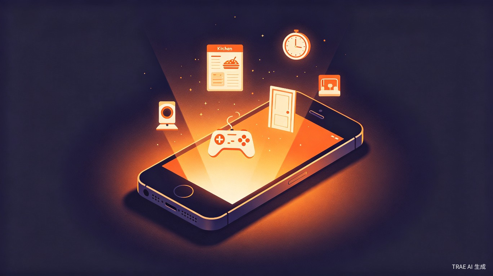
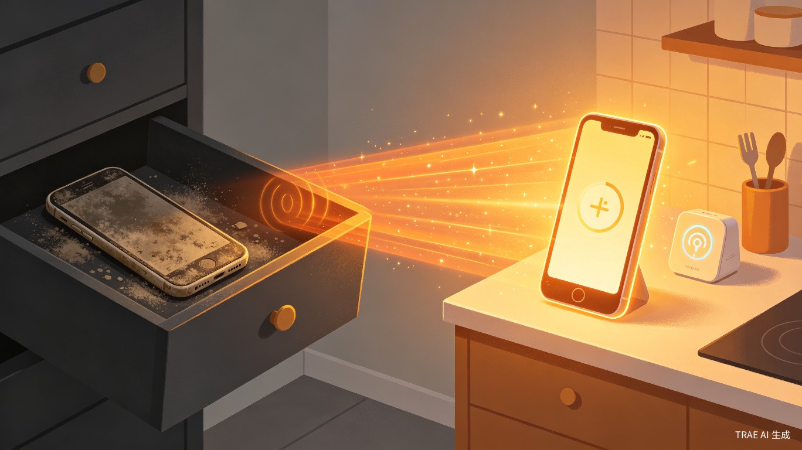
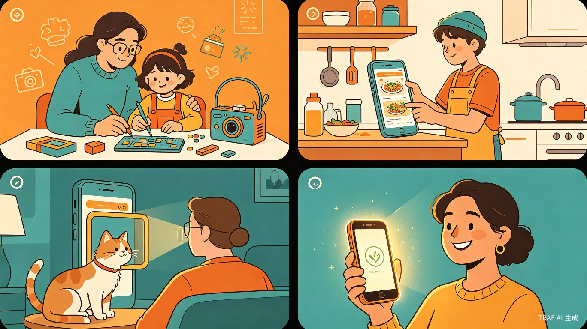

手机的最后一个 App
让抽屉里吃灰的旧手机，一键找到新生命。
从"电子垃圾"到"生活小帮手"，只需三步。
《欲火》是一款让废旧手机/平板/电脑"一键重生"的 App。通过"一键体检 — 能力说明 — 一键变身"三步，让每一台旧设备自动找到最适合的新角色，从"电子垃圾"变成生活中的小帮手或小玩伴。

抽屉里吃灰的旧手机越来越多，扔掉可惜、卖掉不值钱、留着又不知能干嘛。用户需要一种零门槛、有趣、有成就感的方式，让这些"电子老伙计"重新回到生活中发挥作用。
有次周末整理旧物，翻出三部旧手机——屏幕完好、摄像头能用、WiFi 正常，却因为"卡顿"被淘汰。我想让它们"活"过来：一部贴在门口当猫眼监控，一部挂在厨房当菜谱屏，一部放在床头当智能时钟。但搜了一下午教程，全是专业术语，根本看不懂。
自动检测旧设备的硬件能力：摄像头、屏幕、电池、WiFi、存储等
用大白话告诉用户：你的设备最适合变成什么
自动配置、自动安装，旧设备秒变新角色

家里抽屉里有1部以上旧手机/平板的普通人，想处理却不知从何下手
想给生活添点小乐趣、小方便的探索者，乐于尝试新鲜事物
关注环保、舍不得扔东西的"收藏家"，希望物尽其用
想带孩子动手做点有趣小项目的家长，寓教于乐
换了新手机，看着旧手机发呆，不知该留该扔
想在厨房看菜谱，又不想把主力手机弄脏
想给家里装个监控看宠物，不想花大价钱
想用大屏幕看剧，但旧平板"卡得没法用"
周末想带孩子做个有趣的手工+科技小项目
没有《欲火》之前，用户面临三大困境：
不清楚旧设备的剩余能力适合什么生活场景，面对"沉睡"的设备毫无头绪
网上教程碎片化、术语满天飞，"刷机""软路由""NAS"直接把普通人劝退
担心操作复杂浪费时间，更怕一不小心把设备弄成"真砖头"
最终，绝大多数旧设备只能继续在抽屉里"躺尸"。
《欲火》把"处理旧手机"这件事，从一件麻烦事变成了一件有期待感的小确幸。用户打开 App，看着自己的旧手机被检测、被评估、最后"变身"成一个新角色——这种体验就像领养了一只电子宠物，或是见证了一场小小的"魔法"。
旧手机变成厨房里的菜谱屏、卧室里的智能相册、客厅里的复古游戏机、门口的宠物监控……它们以新的身份继续陪伴在生活里，给日常带来实实在在的便利和乐趣。
将原本需要数小时搜索教程、试错调试的复杂过程，压缩为三步、五分钟的傻瓜式操作。不需要懂 IP 地址、不需要会刷机、不需要看代码——App 搞定一切。
全球每年产生超过 5000 万吨电子垃圾，而延长设备使用寿命是最直接、最有效的减废方式。《欲火》让每一部旧设备找到新岗位，减少被填埋或焚烧的电子垃圾。
同时，App 内置"重生碳积分"系统，让用户每一次"变身"都能直观看到自己为地球省下了多少资源——将环保变成一件可量化、可分享的有趣事。
《欲火》的核心不是"技术"，而是人——它帮助普通人用最轻松的方式，把吃灰的旧设备变成生活中的小帮手和小玩伴。
厨房里多一块菜谱屏，床头多一个智能相册，客厅多一台复古游戏机，门口多一个宠物监控……这些场景没有一个是"硬核科技"，但每一个都让生活变得更便捷、更有趣、更有温度。
它让科技不再是高高在上的专业术语，而是回归到"让生活更美好"的本质，完美契合"生活娱乐"赛道的核心理念。
通过延长设备寿命减少电子垃圾，同时让科技普惠更多人群，符合"让科技创新兼具商业潜力与人文温度"的大赛理念。
"生活娱乐"赛道反而更有利于这个作品——因为评委和观众更容易理解"让生活更有趣"这个价值，而不需要先理解"什么是软硬件融合"。
这个创意的最大魅力就在于情感共鸣：每个人家里都有旧手机，每个人都经历过"扔了可惜、留着没用"的纠结。《欲火》给出的不是技术方案，而是一个温暖的答案。